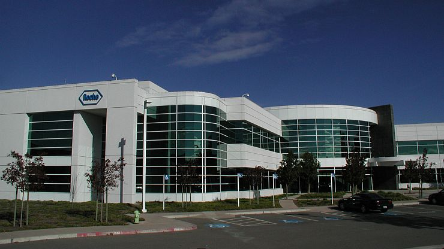
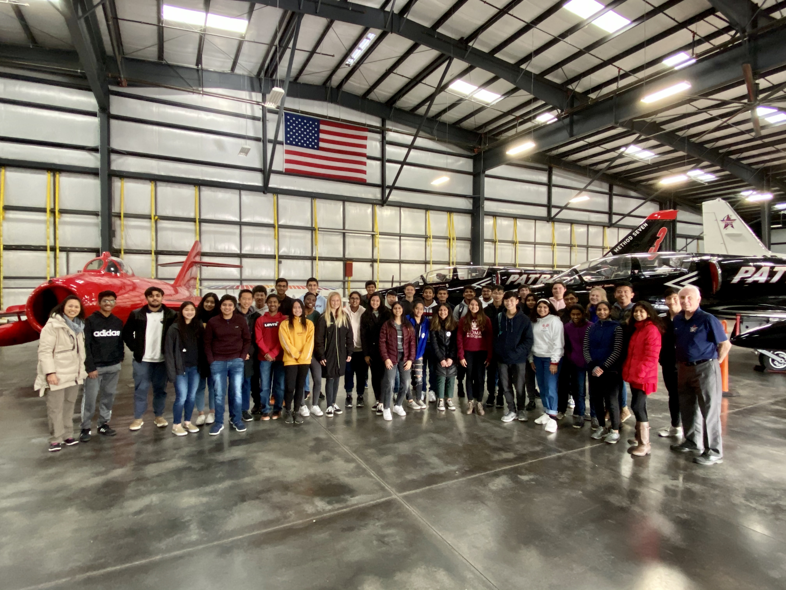
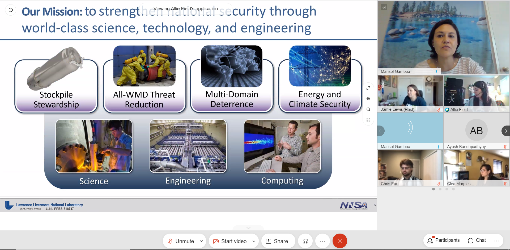
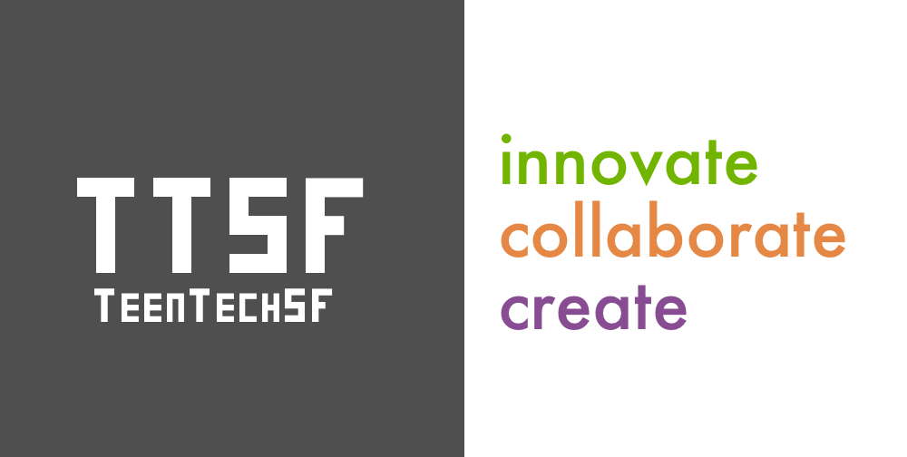

Influential Field Trips:
During my time in the engineering program, I have been given the amazing opportunity to meet a number of industry professionals through workplace field trips and guest speaking events. By meeting these highly experienced and
influential people I have learned a lot about different
career paths, fields of study, and disciplines of engineering.
So far, I have met nuclear, machine learning,
geo-tech, civil, aerospace, and biotech engineers.
One of my most memorable field trips was when I went to Roche. While there, I explored biotech engineering, engineering applications with medicine, how businesses are started, and even how to negotiate a deal. This field trip had a unique way of showing us around and introducing us to new concepts. By splitting up into groups we got to meet different people from different positions in the company. I got to meet people who worked on the financial and management side, people who worked directly with machinery, and even people who actually work in labs with viruses and medicine. While our group was with the management and financial workers at Roche they made us do a negotiation activity where I got to be one of the two lead negotiators. I immediately took lead and solved the negotiation within a record time. This really spiked my interests in finance and communications and introduced me to a cool new career path. Also, as we toured the building and labs I learned a lot about the very complicated machines and technology in use which had helped solve tough problems and make jobs are more efficient. Overall, this field trip broadened my view of engineering jobs and helped me see how my skills might influence the jobs I get in the future.

Another awesome field trip I really enjoyed was when I visited the Patriot Jet Team Foundation in my Sophomore year. In this field trip, I strengthened my knowledge regarding the forces acting on airplanes, airplane design, orbiting, and a lot of physics concepts. Additionally, I entered the field trip with little interest in aeronautics but I left with genuine curiosity and a liking for the subject. At the start of the field trip we went around surveying subsonic airplanes and we discussed the pros and cons of the ways they were designed. I learned loads about fuselages, fuel tanks, lift, drag, thrust, wings, engines, cockpits, and utility. One thing I found particularly interesting was how pitot tubes worked to gage speed and how fuel tanks can be dropped to increase roll. After visiting the planes we looked at some presentations and videos regarding hypersonic travel and flying ships into space and orbiting. Although I found the lecture on subsonic and hypersonic travel interesting, I was mainly intrigued by orbiting and space travel. We defined the term orbit and we discussed several important physics concepts that we don’t learn too much about in school. I found it super cool how small tweaks in thrust can result in orbits changing from circles to an ellipse to parabolas and even to hyperbolas. Overall, this was an amazing experience, all the staff was kind and knowledgeable, and I left with more curiosity and interest in aviation and aeronautics then I had entered with.

I also got to do a virtual tour and meeting at Lawrence Livermore National Labs over zoom. We started the meeting off with a brief introduction to some of the key tech and facilities that the lab has to offer and then split up into small groups. In these groups we did a virtual “round robin” and different workers from different fields of study in STEM from the labs would talk to us. I learned a lot about the computing and web development side of the lab and got to ask workers in those fields a lot of questions about college and careers. Afterwards we got a very in depth tour of the entire building and even did some trivia!

Although COVID has made it difficult for many field trips to be held or fully cover all their activities, I still really enjoyed attending the virtual STEM Inclusivity Forum held by Teen Tech SF. I joined the virtual trip over zoom and it lasted a little over two hours. We started by getting to know the people running the trip and the members of Teen Tech SF. Afterwards we got to listen to a speaker talk about the connection between entrepreneurship, technology, and social issues. I deeply connected with this section of the trip and agree with a lot of the sentiments presented about the role of tech in society and business. Next, a bunch of different community funders and organizations working in tech and social issues presented their work and talked more in depth about a wide variety of engineering topics. We then closed out the meeting with networking breakout sessions and many skill building workshops to further our understanding of the topics covered in the meeting.

 I also attended a talk by Gracie Ermi, a software engineer at Vulcan, whose work involves developing AI to protect endangered animals all over the world. This talk especially stood out to me because I have always been fascinated by developments in the world of AI and how they could be applied to make the world a better place. She and her team use artificial intelligence to process and filter massive amounts of data to equip hands on workers with relevant and useful information and statistics. Hearing her speak about the type of work she has done and how much of an impact it has had globally was truly inspiring and it gave me further motivation to pursue a career in artificial intelligence.
I also attended a talk by Gracie Ermi, a software engineer at Vulcan, whose work involves developing AI to protect endangered animals all over the world. This talk especially stood out to me because I have always been fascinated by developments in the world of AI and how they could be applied to make the world a better place. She and her team use artificial intelligence to process and filter massive amounts of data to equip hands on workers with relevant and useful information and statistics. Hearing her speak about the type of work she has done and how much of an impact it has had globally was truly inspiring and it gave me further motivation to pursue a career in artificial intelligence.